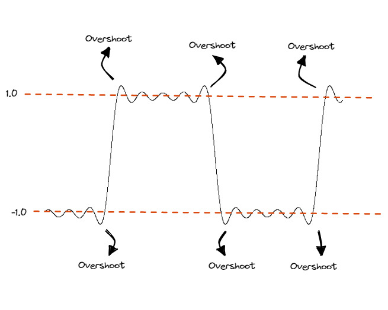

Amplitudo (\(A\)), Frekuensi (\(f\)), dan Fasa (\(\phi\))
Untuk mengetahui perihal sample rate dan bit depth, maka parameter-parameter penting dari sebuah gelombang wajib untuk dipahami, yaitu:
- Amplitudo (\(A\)): Besaran perpindahan gelombang.
- Frekuensi (\(f\)): Besaran kecepatan osilasi gelombang.
- Fasa (\(\phi\)): Besaran posisi gelombang.
Yang membentuk fungsi gelombang (terhadap waktu \(t\)):
\[ y(t) = A\sin(2\pi f t + \phi) \]
Untuk lebih jelasnya gunakan simulasi berikut:
Kode
Kode
Kode
Sample Rate (\(f_s\)) dan Bit Depth (\(b\))
Dari simulasi di atas, dapat dilihat bahwa sebuah gelombang menduduki dimensi 2 \(\mathbb{R}^2\) atas sumbu waktu \(t\) dan ruang \(y\). Sebuah gambar digital dapat dibilang berada pada ruang 3 dimensi (2 dimensi ruang \(x\) dan \(y\) serta 1 dimensi warna \(c\), meskipun sebenarnya dimensi warna lebih rumit dari pada itu). Seperti yang pembaca pasti ketahui, sebuah gambar memiliki resolusi pada ketiga dimensi tersebut, yaitu pixel pada \(x\) dan \(y\), bit pada \(c\). Demikian pula dengan gelombang (audio), sample rate (\(f_s\)) adalah resolusi waktu \(t\) dan bit depth (\(b\)) adalah resolusi ruang \(y\).
Hal tersebut dapat dilihat dari simulasi berikut dimana sample rate mempengaruhi kerapatan sample terhadap sumbu \(t\), sementara bit depth mempengaruhi kerapatan sample terhadap sumbu \(y\).
Kode
Kode
Kode
Pada grafik di atas, titik-titik dan garis hijau menunjukkan representasi digital dari sinyal input biru, masing-masing adalah titik sample dan sinyal sample-and-hold. Garis mendatar merah pada \(-1.0\) dan \(1.0\) adalah batas clipping (area merah), sementara itu garis putus-putus mendatar merah di antara rentang tersebut yang terlihat samar ialah level-level kuantisasi yang dipengaruhi oleh bit depth dengan hubungan \(N=2^n\) dengan \(N\) jumlah level kuantisasi dan \(b\) bit-depth. Garis-garis hijau putus-putus mendatar adalah posisi sampling yang dipengaruhi oleh sample rate.
Kode
Pada grafik berikutnya ini, kurva hijau adalah hasil interpolasi dari sinyal digital yang bersumber dari sinyal input.
Interpolasi
Interpolasi yang digunakan di grafik di atas menggunakan interpolasi “natural cubic spline”, sementara itu interpolasi pada DAC umumnya berupa interpolasi fungsi sinc a.k.a low-pass filter. Sehingga grafik hanya pendekatan.
Dari simulasi anda dapat melihat bagaimana kualitas/akurasi output dipengaruhi oleh sample rate dan bit depth. Disamping itu, dari berbagai nilai dan kombinasi kedua parameter tersebut, dapat terjadi beberapa fenomena yang dapat diamati, diantaranya ialah aliasing dan fenomena Gibbs (overshoot).
Aliasing
Dalam pemrosesan sinyal digital, dikenal istilah frequensi Nyquist yang merupakan frekuensi maksimum yang dapat direkam oleh sebuah sistem digital dengan benar sebelum sistem melakukan “misidentifikasi” terhadap frekuensi tersebut. Nilai dari frekuensi Nyquist adalah setengah dari sampling rate (\(f_N = \frac{1}{2}f_s\)). Ini berkaitan dengan aturan Nyquist yang menyatakan bahwa setiap gelombang sinusoidal setidaknya membutuhkan 2 titik sample untuk dapat direplika dengan akurat. Hal ini pasti akan mengingatkan sebagian dari pembaca perihal dunia audio bahwa sampling rate 40 kHz hanya dapat merekam sinyal hingga 20 kHz, \(f_s\) 44.1 kHz hingga 22.05 kHz, \(f_s\) 96 kHz hingga 48, dan seterusnya. Inilah penyebab batasan tersebut.
Merekam atau menyimpan sinyal dengan frekuensi yang lebih tinggi dari frekuensi Nyquist akan memperkenalkan spectral noise berupa lipatan dari frekuensi diatas frekuensi Nyquist ke rentang frekuensi normal. Misal, jika anda merekam frekuensi 32 kHz pada sistem dengan sample rate 40 kHz, maka frekuensi yang terekam ialah 8 kHz.

Ilustrasi di atas menunjukkan terjadinya aliasing, perhatikan bahwa sinyal output memiliki frekuensi yang sama dengan sinyal input hingga sinyal input melewat frekuensi Nyquist (\(f_2/2\)). Di atas nilai tersebut, terjadi aliasing di mana frekuensi output adalah “lipatan” atau “cerminan” frekuensi input terhadap frekuensi Nyquist. Perhatikan juga bahwa polarisasi sinyal juga berbalik.
Simulasi aliasing
Dalam simulasi di atas, anda dapat mengatur frekuensi sinyal lebih tinggi dari setengah sampling rate (\(f \ge 0.5\cdot f_s\)), misal \(f = 20\), \(f_s = 16\), dan menemukan bahwa sinyal output memiliki frekuensi yang berbeda dengan input, hal yang sangat tidak diinginkan dalam pemrosesan sinyal.
Dalam praktikny, sinyal audio dapat bersifat nondeterministik sehingga terkadang sulit untuk membatasi frekuensi maksimal yang ditangkap suatu sistem, oleh karena itu peralatan sampling umumnya dilengkapi dengan anti-aliasing filter berupa LPF analog sebelum sirkuit sampling yang bekerja disekitar frekuensi Nyquist.
2D Aliasing
Dalam pemrosesan sinyal 2D, seperti gambar atau video, juga dapat terjadi aliasing dimana pola pada gambar memiliki frekuensi yang lebih tinggi dari resolusi samping, membentuk sebuah pola pada gambar hasil. Hal ini dikenal dengan sebutan efek moiré.
Overshoot
Berbeda dengan aliasing, sampling rate atau pun bit depth tidak memiliki pengaruh langsung terhadap fenomena ini. Overshoot oleh fenomena Gibbs terjadi ketika sinyal dengan diskontinuitas (tidak smooth) seperti square wave diinterpolasi ke bentuk analog. Pada simulasi diatas, atur sehingga bit depth \(b\) berada pada nilai \(1\) dan \(f_s\) setinggi mungkin untuk membentuk sinyal digital square wave yang dapat dilihat pada Gambar 2. Perhatikan output interpolasi pada Gambar 3, alih-alih mendapatkan gelombang input, square wave yang dibentuk dengan parameter di atas pun tidak dihasilkan dengan tepat dan menyebabkan clipping di sana sini.

Demikian terkait sample rate, bit depth, dan implikasinya.
…